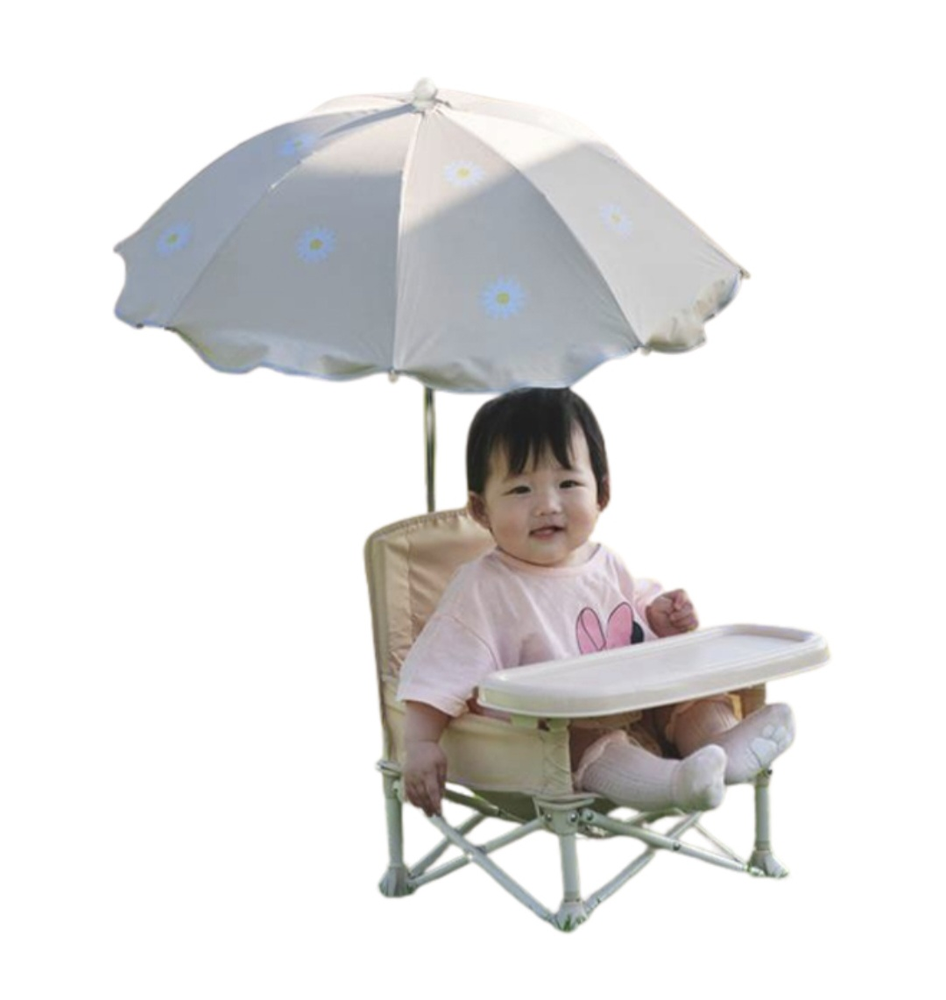
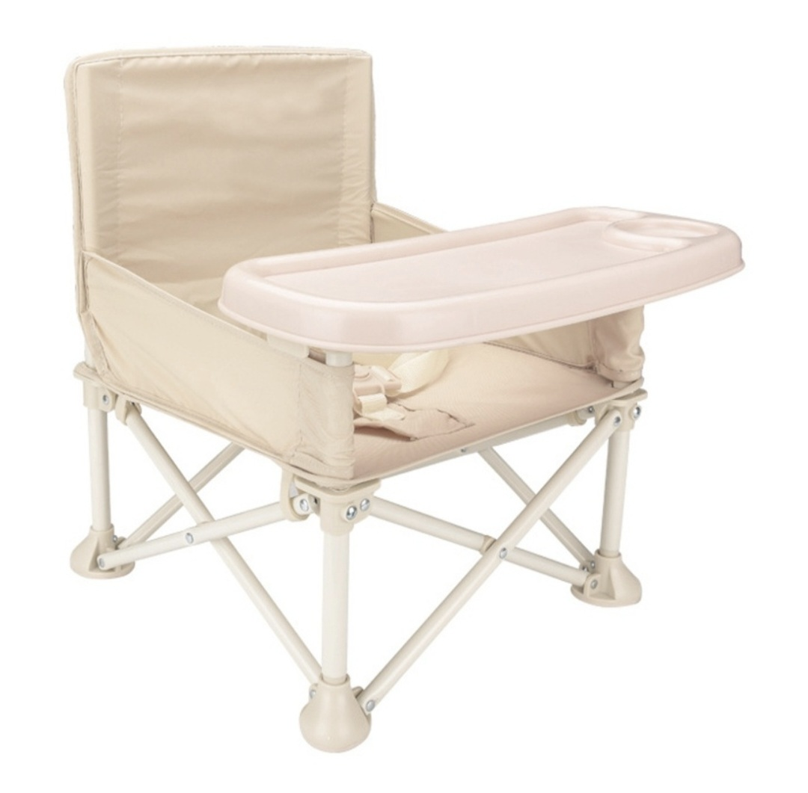
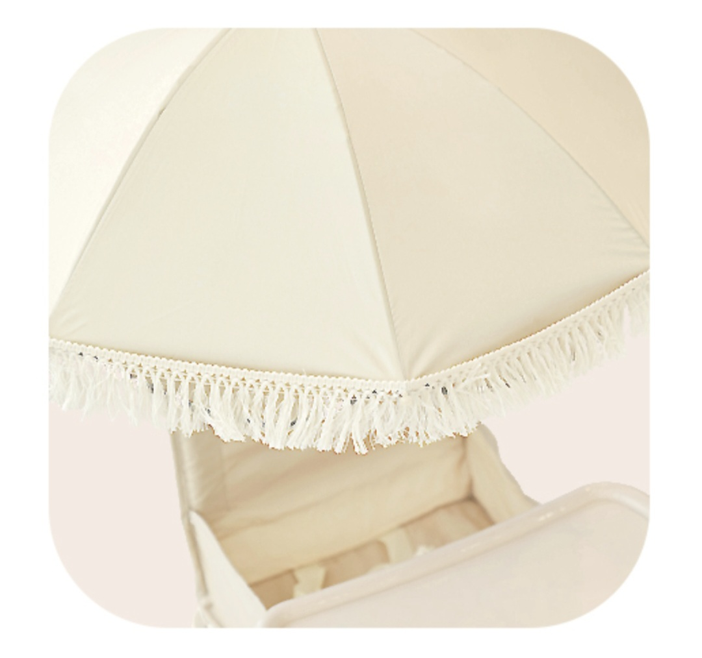

공원 나들이, 캠핑, 베이비페어… 아이와 나가면 즐거운데, 이유식 시간이 되면 막막하죠. 벤치에 앉혀 놓자니 불안하고, 유모차에서 먹이자니 자세가 너무 불편해요.
그 고민을 해결해 줄 아이템이 바로 이유부스터예요. 야외 어디서나 펼치면 트레이 달린 이유식 의자가 되고, 접으면 작은 가방에 쏙 들어가는 접이식 설계. 여기에 파라솔까지 장착하면 여름 직사광선도 걱정 없어요.

이유식을 시작한 5~6개월 아기부터 사용할 수 있는 야외용 이유식 의자예요. 알루미늄 프레임 + 접이식 설계라 차 트렁크에 넣기도 가볍고, 펼치면 바로 사용 가능한 트레이 포함 구조예요. 안정적인 팔걸이와 발걸이가 있어서 아기가 흘러내리지 않고 바른 자세로 앉아 이유식을 먹을 수 있어요.

이유부스터 본체에 클립으로 장착하는 전용 파라솔이에요. 자외선(UV) 차단 소재를 사용해서 여름 직사광선을 막아 주고, 360도 각도 조절이 가능해 햇빛 방향에 맞게 쉽게 돌릴 수 있어요. 데이지 패턴이 너무 귀엽다는 후기가 많아요. 이유부스터와 함께 구매하면 설치도 간편하고, 별도로 유모차 파라솔을 챙길 필요도 없어요.
두 제품을 함께 사용하는 추천 장소와 활용 팁이에요.
이유식을 시작하는 생후 5~6개월부터 사용 가능해요. 혼자 등을 지탱하고 고개를 세울 수 있는 시기가 되면 안전하게 앉힐 수 있어요. 제품마다 권장 월령이 다를 수 있으니 구매 전 확인해 주세요.
실내 위주로 사용하신다면 이유부스터만으로 충분해요. 단, 여름 야외 외출이 잦은 분이라면 파라솔을 함께 구매하는 걸 강력 추천해요. 신생아~12개월 아기는 자외선에 특히 취약하거든요.
제품에 따라 다르지만 이유식 의자로 사용하다가 점점 크면 소풍용 캠핑 의자로 활용할 수 있어요. 보통 만 1~2세 정도까지는 이유식 의자로, 이후에는 야외 의자로 활용하는 가정이 많아요.
이 포스팅은 쿠팡 파트너스 활동의 일환으로, 이에 따른 일정액의 수수료를 제공받습니다.